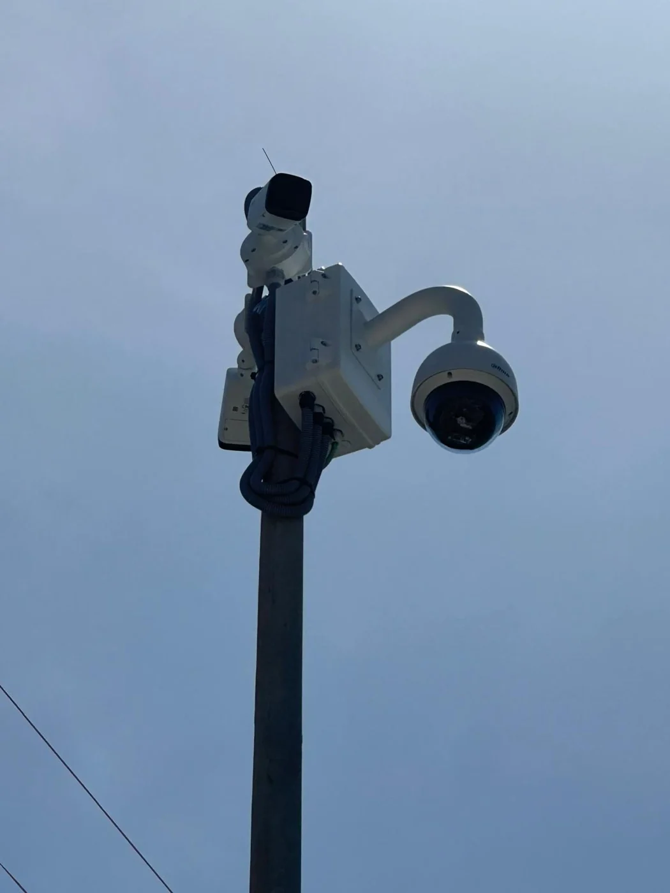
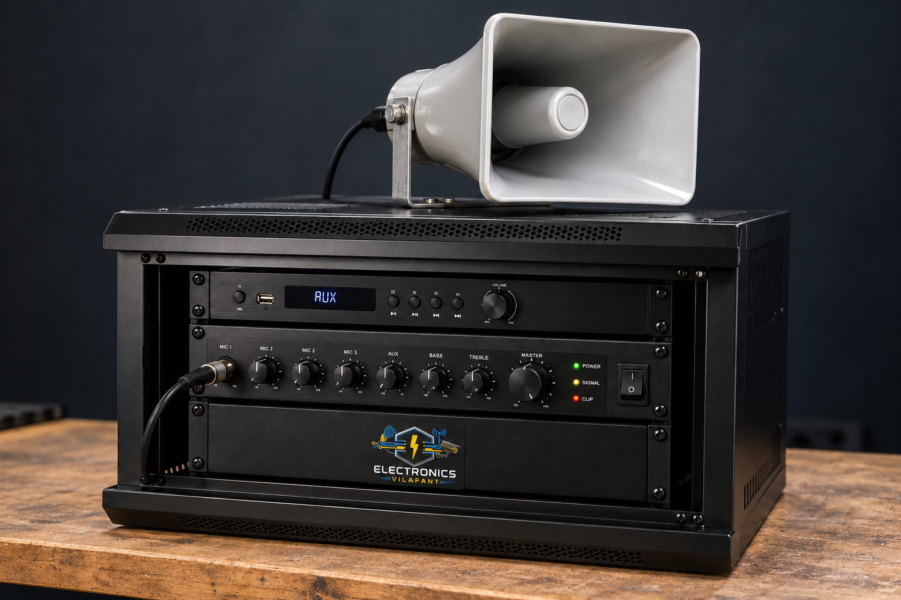
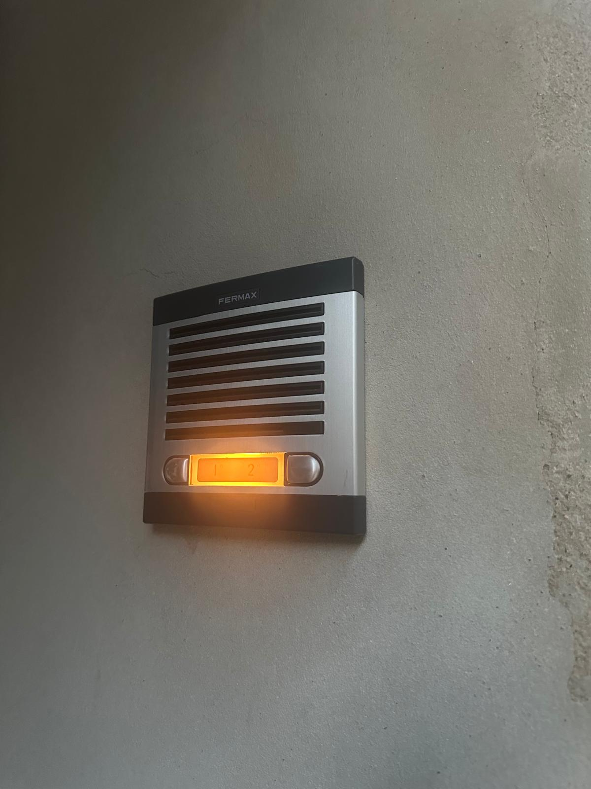
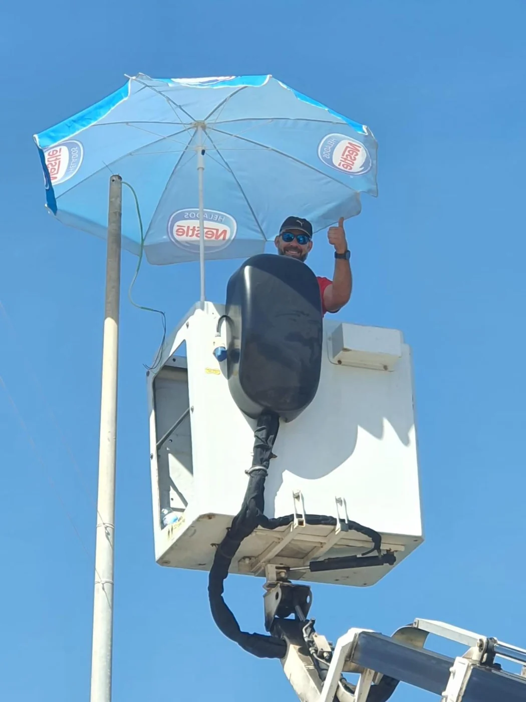
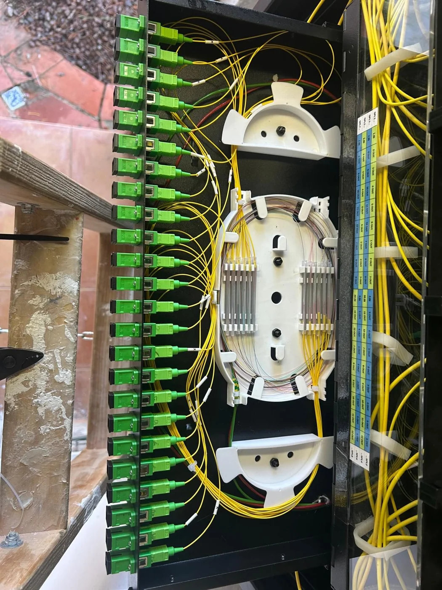
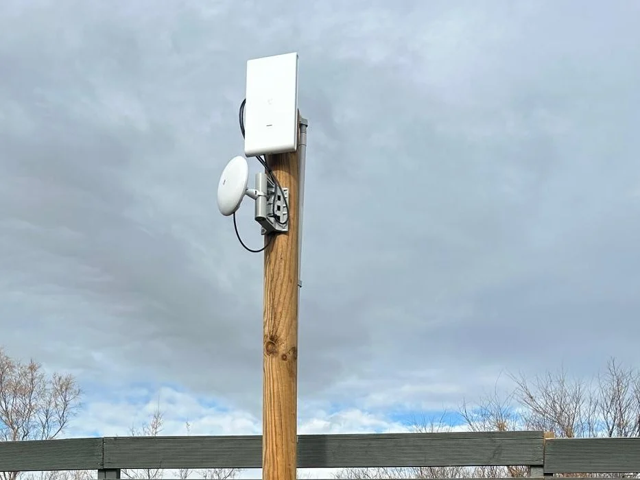
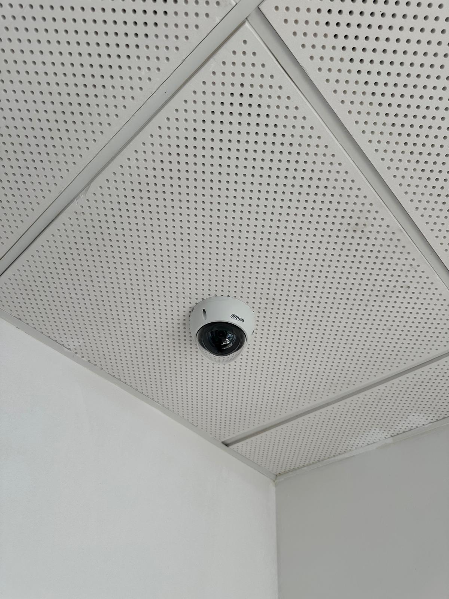
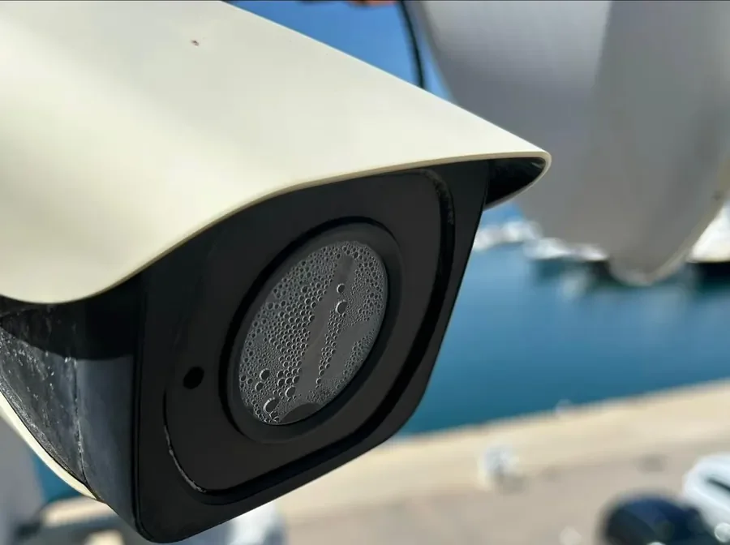
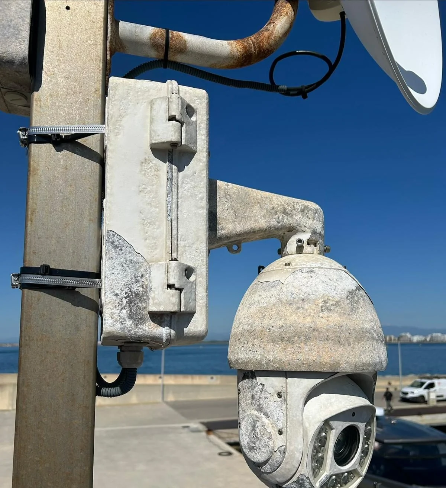

01
Caméras de sécurité
Une caméra ne fonctionne plus ou vous souhaitez étendre la surveillance ? Installation, recherche de panne et accès à distance.
Demander pour les caméras ↗Installation et réparation pour logements, commerces et copropriétés. Contactez-moi directement et expliquez vos besoins.
5,0 sur Google · 5 avis ↗
Une panne, une amélioration ou une nouvelle installation : je vous aide à étudier la solution.
Une caméra ne fonctionne plus ou vous souhaitez étendre la surveillance ? Installation, recherche de panne et accès à distance.
Demander pour les caméras ↗
Votre sonorisation tombe en panne ou vous souhaitez en installer une ? Je dispose de 15 ans d’expérience en réparation.
Demander pour la sonorisation ↗
L’interphone ne sonne plus ou doit être remplacé ? Installation, remplacement et réparation pour logements et copropriétés.
Demander pour un interphone ↗Amélioration de la couverture, points d’accès, réseaux professionnels et résolution des problèmes de connexion.
Câblage structuré, prises réseau, baies, réorganisation et extension de réseaux existants.
Pose, fusion, réparation et organisation de liaisons fibre pour installations privées et professionnelles.
Liaisons sans fil entre bâtiments ou zones où le tirage de câble n’est pas pratique.
Sélection de travaux réalisés directement, certains en tant que professionnel collaborateur sur des projets d’autres entreprises.






Il n’est pas toujours nécessaire de remplacer toute une installation. Nous contrôlons l’état des équipements et identifions les pannes, l’usure et les points faibles afin de décider quoi réparer, conserver ou renouveler.
Dans ce cas, une caméra ayant perdu son étanchéité et une PTZ fortement corrodée avec des blocages de rotation après environ 15 ans de service ont été détectées. Leur remplacement a été recommandé.
“Trabajo limpio y buena atención.”
Lire l’avis complet
Muy buen servicio. Nos instalaron las cámaras de seguridad de forma rápida y profesional, explicando bien su funcionamiento. Trabajo limpio y buena atención. Muy recomendables.
“Un profesional excelente en todos los aspectos”
“Profesionales competentes, atentos y de total confianza.”
Lire l’avis complet
Muy contento con el servicio. Tuve un problema y me ofrecieron una solución ágil y resolutiva. Profesionales competentes, atentos y de total confianza. Un 10 en la atención.
“Muy satisfecho y contento.”
Lire l’avis complet
Està genial! Me hizo la instalación completa de red de fibra con vigilancia de cámaras por toda la casa. La caja de conexiones muy limpia i bien instalada, todo va perfecto y atención de 10 sobre 10. Muy satisfecho y contento. Calidad precio, valió la pena por todo lo que nos ha hecho.
“Muy buen trabajo!”
Lire l’avis complet
Muy buen trabajo! Me instalaron las cámaras de seguridad, rápidos i muy limpios! Sin duda los volvería a llamar!
Interventions chez le client à Vilafant, Figueres et dans l’Alt Empordà. La zone peut être élargie selon les travaux. Aucun local ouvert au public.
Pour une panne, une extension ou une nouvelle installation, vous pouvez appeler directement ou envoyer un WhatsApp.
Consultez les informations de confidentialité concernant vos coordonnées.